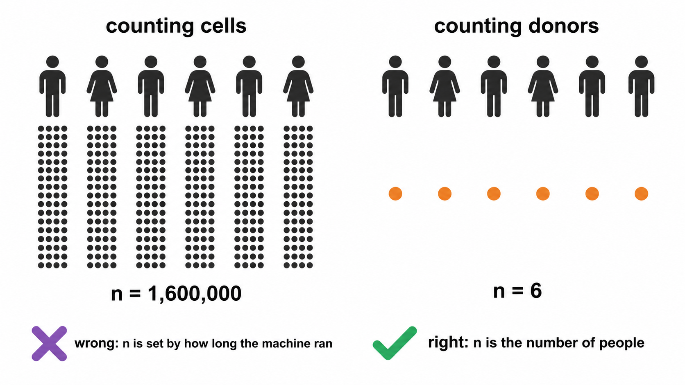
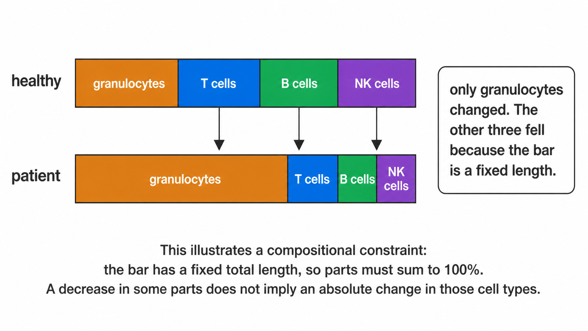
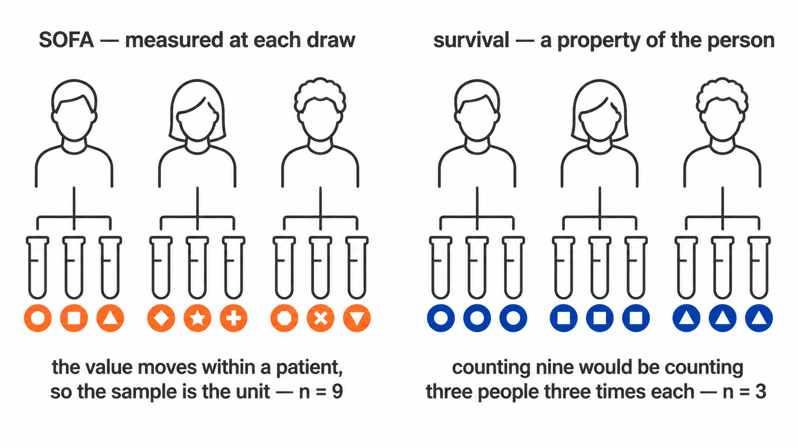
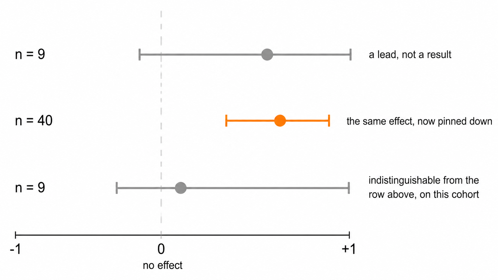

Every test here trades assumptions against power. This article states which trade was made at each point, and the sample size at which it should be revisited.
1. Aggregation
1.1 Pseudoreplication
The event count in an FCS file is determined by acquisition duration, not by study design. Treating events as independent observations sets the degrees of freedom from an operational parameter: sixteen donors contributing one million events each yield a nominal n of 1.6 × 107.
Two consequences follow. Statistical power becomes a function of instrument time, so extending acquisition on one tube increases apparent significance. More seriously, a single donor acquired to greater depth contributes disproportionate weight, and inter-individual variation in that donor is indistinguishable from a group effect.
1.2 Implementation
Every test aggregates to one value per sample per population before estimation, following Weber et al. (2019, Commun Biol 2:183). The degrees of freedom reflect the number of donors.
mfi <- expand.grid(sample_id = sprintf("S%02d", 1:12),
population = "CD4 T cells", marker = "HLA-DR",
stringsAsFactors = FALSE)
mfi$n_cells <- 500
mfi$median_asinh <- rnorm(12, 2, 0.3) + rep(c(0, 0.8), each = 6)
mfi$pct_positive <- pmin(100, pmax(0, rnorm(12, 30, 5) + rep(c(0, 10), each = 6)))
mfi$is_control <- FALSE; mfi$qc_status <- "pass"
grp <- setNames(rep(c("HC", "Patient"), each = 6), sprintf("S%02d", 1:12))
res <- stats_marker_state(mfi, grp, reference = "HC")
res[, c("marker", "measure", "n_reference", "n_comparison", "delta_median", "p_value")]#> marker measure n_reference n_comparison delta_median p_value
#> 1 HLA-DR median_asinh 6 6 1.025903 0.005074868
#> 2 HLA-DR pct_positive 6 6 13.592904 0.013065227n_reference is 6, the number of control donors, not
3,000, the number of events they contributed.
Event-level quantities remain available through
stats_subcluster_shifts(), which reports effect sizes
without p-values. They are hypothesis-generating.

2. Test selection
Group comparisons use Wilcoxon rank-sum and Kruskal-Wallis, which assume independence and ordinal comparability.
The principal alternative, implemented in diffcyt, is limma’s moderated t, which stabilises variance estimates through an empirical Bayes prior shared across markers. At mass cytometry marker counts of 30 to 40 and designed sample sizes, this is the more powerful choice.
At a dozen markers and single-digit donors per group the prior is estimated from too few markers to stabilise, and the normality assumption becomes load-bearing at precisely the sample size where it cannot be assessed.
Cost. Reduced power under normality, and no direct mechanism for covariate adjustment.
Revisit at. Approximately fifteen samples per group, where the prior becomes informative and mixed models can accommodate repeated measures.
2a. The parametric tests, and why they are reported separately
Most immunology papers report a t-test or an ANOVA, and a reviewer may ask for one. Declining to compute it does not remove it from the paper; it moves the calculation somewhere with no record of whether its assumptions held.
So parametric_tests.csv carries the parametric
equivalent of every comparison, and
group_comparison_stats.csv is unchanged. Two files, two
answers, and the columns that decide between them sit on the parametric
row.
The transform. Frequencies are proportions. They are bounded, their variance depends on their mean, and near 0 or 100 they are strongly skewed, which is exactly where rare populations live. The arcsine square root transform stabilises that variance and is the conventional remedy, so the parametric tests run on transformed values. Group means are reported back on the percentage scale, because a difference of 0.07 arcsine units means nothing to a reader.
Which test. Two groups give Welch’s t-test, which does not assume equal variances, with Student’s t beside it. Three or more give Welch’s ANOVA with the classical one-way beside it. Welch’s is the default in both cases because equal variance is an assumption, not a property, and the cost of Welch’s when variances happen to be equal is small.
The assumptions, on every row.
brown_forsythe_p tests equal variance, using deviations
from the median rather than the mean so it does not itself assume
normality. shapiro_p tests normality of the
within-group residuals, not the pooled values, which
are bimodal whenever the groups genuinely differ and would fail the test
for the wrong reason. assumptions_met combines them and
recommended names the test to read.
Post-hoc. With three or more groups,
posthoc_tests.csv carries all three standard families:
Games-Howell, which uses Welch’s standard error and pair-specific
degrees of freedom and so pairs with Welch’s ANOVA; Tukey HSD, which
assumes equal variances and pairs with the classical ANOVA; and Dunn,
the rank equivalent that follows Kruskal-Wallis. All three are written,
adjusted within each family, and the assumption columns say which to
read. Choosing after seeing the p-values is the thing this arrangement
is designed to make visible.
What is still not here. Mixed models and GLMMs are
the right tool for repeated measures and are not implemented;
--paired-column with --condition-column covers
the two-timepoint case and nothing wider. Beta regression, which models
the bounded support directly rather than transforming it, is the better
answer at larger sample sizes. Both become worth the dependency at
roughly fifteen donors per group.
3. Compositionality
3.1 Constraint
Population percentages within a sample are constrained to sum to 100 and cannot vary independently. A genuine granulocyte expansion mechanically depresses every lymphocyte percentage. Those depressions test significant while absolute lymphocyte counts per microlitre remain unchanged.

3.2 Log-ratio
clr_frequencies() applies the centred log-ratio,
expressing each population relative to the geometric mean of the sample
composition rather than to a fixed total.
freq <- data.frame(
sample_id = rep(sprintf("S%02d", 1:6), each = 3),
population = rep(c("Granulocytes", "CD4 T cells", "B cells"), 6),
pct_of_cd45_pos = as.vector(replicate(6, {v <- c(60, 25, 15) * exp(rnorm(3, 0, .1)); 100*v/sum(v)})),
is_control = FALSE, qc_status = "pass")
head(clr_frequencies(freq)[, c("sample_id", "population", "pct_of_cd45_pos", "clr")], 3)#> sample_id population pct_of_cd45_pos clr
#> 1 S01 Granulocytes 61.69888 0.8023069
#> 2 S01 CD4 T cells 24.02756 -0.1407573
#> 3 S01 B cells 14.27356 -0.66154963.3 Concordance
Both parameterisations are tested and
compositional_concordance() classifies each result.
robust_to_composition survives both and supports
interpretation as an independent change.
raw_only__possible_composition_artefact is significant
on percentages and not on log-ratios, which is the configuration
produced by section 3.1.
clr_only__was_masked_by_composition is the converse, an
independent change obscured by the constraint.
3.4 Limit
The log-ratio does not recover absolute abundance. Proportional
expansion of every population leaves the composition invariant and is
undetectable in frequency data by construction. Discriminating expansion
from relative expansion requires cells per microlitre, so
abundance_measure() uses absolute counts wherever the
patient table supplies a leukocyte count.
4. Covariates
Age and sex are diagnosed rather than adjusted.
At the sample sizes cytometry cohorts reach, commonly under ten donors per group, a model estimating age and sex effects alongside the group term consumes the residual degrees of freedom required for the comparison of interest. Where the covariate is strongly associated with group, the parameters are not separable at any sample size, because the design contains no observations at the covariate levels required to estimate the effects independently.
stats_confounding() therefore reports the two conditions
that jointly define a confounder: differential distribution across
groups, and association with the outcome.
stats_rank_ancova() fits the adjusted model on request,
labels every row EXPLORATORY, and records
NOT FITTED with the reason where residual degrees of
freedom are insufficient.
4a. Clinical variables, which are a different question
A confounder is screened to decide whether a group difference can be
believed. A clinical variable, a severity score, a laboratory value, an
outcome flag, is the question itself, and
stats_clinical_association() treats it that way.

The test follows the variable’s type rather than being chosen:
| Variable | Test | Effect reported | Signed |
|---|---|---|---|
| Numeric (SOFA, CRP, lactate, BMI) | Spearman’s rho | rho, with a bootstrap interval | yes |
| Two levels (28-day survival) | Wilcoxon rank-sum | Cliff’s delta, with a bootstrap interval | yes |
| Three or more levels (infection focus) | Kruskal-Wallis | epsilon-squared | no |
Epsilon-squared is H / (n - 1), the proportion of rank
variance the grouping accounts for, bounded 0 to 1. It is unsigned,
because a variable with three unordered levels has a magnitude and no
direction, and that is carried explicitly in a signed
column rather than left for the reader to infer from a sign that happens
to be positive. Before it was added, a multi-level variable produced a
p-value and nothing else: the figure could say a test had run and not
whether it had found anything.
Rank methods throughout, for the reason they are used everywhere else in this package. Clinical scores are ordinal by construction, so a Pearson correlation asserts an interval scale the data does not have. Laboratory values are skewed and carry outliers that are real rather than erroneous, a creatinine of 335 is a patient, not a typing error, and a product-moment correlation on nine points with one such value is a statement about that one patient.
Multiplicity is corrected within each variable, across the populations tested against it. Each variable is one question asked of every population, and that is the family; pooling every variable into one correction would penalise a well-powered variable for the company it keeps. The choice is recorded here because it is a judgement rather than a default.
It also has a stated assumption, which is that the variables are
separate questions. They frequently are not: in a cohort where the
sickest patients are also the ones who died, SOFA and 28-day survival
describe one gradient, and a population associated with both is one
finding counted twice. fig_clinical_correlogram() exists to
make that visible before the heatmap is read, because no correction can
repair it and nothing else in the run would show it. Two-level variables
appear there coded 0/1, for which Spearman is the rank-biserial
correlation; variables with three or more unordered levels are excluded
rather than coded 1/2/3, which would invent an ordering.
4b. Effect intervals on a small cohort
Every signed effect above is written with a 95% percentile bootstrap interval: 2000 resamples of the patient-value pairs for Spearman, stratified within each arm for Cliff’s delta, from a fixed seed so a given table always yields the same interval and the RNG stream is restored afterwards so nothing downstream is perturbed.

The interval is the part of the answer that carries how little a small cohort constrains the effect. On ten patients a rho of 0.61 with an interval from -0.1 to 0.9 and a rho of 0.05 can be the same underlying quantity, and the point estimate alone cannot say so; reporting the effect and its interval beside the p-value, rather than the p-value alone, is the standard recommendation for exactly this situation.
Its own limits are stated on the figure that draws it. A percentile bootstrap at this sample size is approximate: below about nine observations the effective resample is smaller than the nominal one and coverage falls short of 95%. So a wide interval should be read as this cohort does not constrain the effect rather than as a calibrated range, and no interval is written at all below six samples, a number quoted at a width nobody should trust is worse than a blank.
The same reasoning is why group_differences.png draws
the smallest p-value the design can reach. A Wilcoxon rank-sum test has
choose(n1 + n2, n1) equally likely rank arrangements under
the null, so the most extreme separation possible gives a two-sided p of
2 / choose(n1 + n2, n1). At 4 against 5 that is 0.016, and
after correcting across a dozen populations nothing can reach 0.05
however cleanly the groups separate. Where that floor sits above the
0.05 line, an empty region of the figure is a fact about the design and
not about the biology.
Two boundaries. This is association, not survival
analysis: a 28-day flag is tested as the two-group comparison
it is, and no time-to-event model is fitted, because the sample sheet
carries no follow-up time and a proportional-hazards fit on a binary
column with no time is a category error rather than an approximation.
And every test runs on one value per sample, so the
replicates are subjects; correlating a score against pooled events would
treat one deeply acquired patient as tens of thousands of independent
observations, which is the same failure abundance_measure()
exists to prevent.
The underpowered column marks every test run on fewer
than ten samples. At that size a rank test detects only very large
effects, so a null result carries almost no information and should not
be reported as evidence of no association.
5. Batch effects
Correction methods displace cells until batch labels mix. This is valid when batch is independent of the study design.
Clinical cohorts rarely satisfy that condition: recruitment and acquisition are typically sequential, so batch and group approach collinearity. Displacing cells until batches mix then also removes the biological contrast, and the algorithm cannot distinguish the two contributions.
batch_mixing_report() returns both required quantities
before any correction: iLISI against a permutation null, establishing
whether batch structure exists, and Cramér’s V, establishing
whether it is separable from group. A high V means no setting
makes correction safe, which is the most informative result the
diagnostic can return.
--correct-batch performs the correction and is refused
above a configurable threshold.
6. Multiplicity
Benjamini-Hochberg correction is applied within each test family, with raw and adjusted p-values both reported.
Differential state adjusts within each measure rather than across both. Median intensity and percent positive are two summaries of the same events and are strongly correlated; pooling them would inflate the family with non-independent hypotheses and over-penalise every result.
7. Effect sizes
Every p-value is reported with an effect size: Cliff’s delta across samples, or matched-pairs rank-biserial for paired designs. Clinical associations add a bootstrap interval on the effect as well; see §4b for why, and for why the interval is suppressed rather than narrowed below six samples.
Differences rather than ratios are reported for transformed intensities. Arcsinh and logicle scales admit negative values, on which a ratio is undefined in interpretation and changes sign without a corresponding change in biology.
8. Measurement resolution
An effect size states how large a difference is relative to the spread between donors. It does not state whether the instrument and the gating strategy could resolve a difference of that size at all.
difference_over_gate_u supplies the second quantity: the
observed difference in medians divided by the typical within-sample
uncertainty on the frequency, itself propagated from where the
thresholds were placed. Below one, the groups differ by less than the
distance the cut travels under resampling of the cells that determined
it.
This is a screen, not a test. The uncertainty is partly shared across
the run, since every sample passes through one panel, one transform and
one placement rule, so it cancels in part when a difference is taken and
the ratio is conservative. A ratio below one is a reason to open
threshold_uncertainty.csv before interpreting the
comparison, not grounds to discard it.
difference_over_total_u repeats the comparison against
the gate term and the counting term together. The two ratios coincide
for an abundant population and separate for a rare one, where the
threshold can be well placed and the frequency still rest on too few
events to support the difference being tested. Where they disagree, the
smaller is the one to act on.
The order to read remains: adjusted p, then effect size, then these. A result that survives all of them is one where the groups differ, the difference is large relative to donor variation, and it is larger than both the distance the gate can move and the noise in the count.
8a. Detection limits
An effect size and a p-value can both be computed from a population of nine events. Neither reports that fact.
detection in population_frequencies.csv
classifies each value against the conventional limits of detection and
quantification, twenty and fifty events against the parent gate. A
population below the limit of quantification in most samples should not
be carried into a group comparison at all: the test will run, and its
result is a statement about acquisition depth.
This is a screen on the measurement rather than a correction to the test. No p-value is adjusted by it, and the tests behave as they did before.
9. Summary
| Question | Function | Unit |
|---|---|---|
| Did population abundance change? | stats_group_comparison() |
sample |
| Does it survive the compositional constraint? |
clr_frequencies(),
compositional_concordance()
|
sample |
| Did marker expression change within a population? | stats_marker_state() |
sample |
| Is the contrast confounded by age or sex? | stats_confounding() |
sample |
| Is the contrast confounded by batch? | batch_mixing_report() |
cell, descriptive |
| Is the contrast an artefact of the gate? |
stats_threshold_drift(),
cluster_gate_agreement()
|
sample and cell |
| Is the difference bigger than the gate’s own uncertainty? |
run_gate_uncertainty(),
annotate_gate_uncertainty()
|
sample |
| Were enough cells counted for the frequency to mean anything? | counting_uncertainty() |
sample |
| Which markers shift within a subcluster? | stats_subcluster_shifts() |
cell, no p-value |
10. Sources for the tests implemented here
Where each method came from, and what it is for.
Proportions. Population frequencies are bounded and their variance depends on their mean, so a test assuming constant variance is wrong in a way that gets worse as the population gets rarer. The arcsine square root transform is the standard remedy, and its asymptotic variance is known rather than estimated from the data, which is what lets ordinary ANOVA machinery run on top of it (Frontiers in Psychology, 2022).
Unequal variance. Welch’s t-test and Welch’s ANOVA do not assume equal variances, so they stay valid when group sizes and spreads differ, which they almost always do in an immunophenotyping cohort. Games-Howell is the post-hoc test that matches: it uses Welch’s standard error and pair-specific degrees of freedom rather than one pooled estimate (rstatix).
Rank post-hoc. Dunn’s test compares mean ranks computed over the whole dataset, which is what makes it the correct follow-up to Kruskal-Wallis. A set of pairwise Wilcoxon tests re-ranks within each pair and answers a different question.
Clinical associations: the unit of analysis. A
cohort sampled at several timepoints carries two kinds of clinical
column. One is constant within a patient , 28-day survival, BMI, age,
and asks a between-subject question; the other varies within a
patient, a severity score at each draw, and asks a
within-subject one. Treating repeated samples from one patient
as independent observations is pseudoreplication: it inflates the
apparent sample size, narrows the interval and makes significance more
likely without a single extra patient having been recruited, and it is
common enough in the life sciences to be one of the standard threats to
reproducibility (The
problem of pseudoreplication in neuroscientific studies, BMC
Neuroscience; Statistics
Done Wrong, on pseudoreplication). Collapsing to one value per
subject is the first remedy named in that literature and is what
clin_variable_unit() triggers for a patient-constant
column.
For a column that varies within a patient, collapsing would delete
the variation being asked about, so the per-sample test is kept and
n_patients and repeated_measures are reported
beside it. The dedicated method there is a repeated-measures
correlation, which estimates the common within-individual slope without
averaging (Bland
& Altman 1995; Bakdash & Marusich, Frontiers in
Psychology 2017, implemented in rmcorr).
It is named rather than implemented, for the same reason as the mixed
models below.
Effect sizes with intervals, not p-values alone.
Reporting the estimated effect with a confidence interval, rather than a
p-value on its own, is what the reporting guidelines for prognostic
marker studies ask for, and the surveys behind those guidelines found
96% of papers reporting p-values against 42% reporting an interval (REMARK
explanation and elaboration, BMC Medicine 2012).
clinical_association.csv carries ci_low and
ci_high on every signed effect for that reason, and
fig_clinical_forest() draws them.
Rank effect sizes. Cliff’s delta is the
non-parametric two-group effect size for ordinal or non-normal data, and
percentile bootstrap intervals are the standard way to bound it (Cliff’s
Delta Calculator, Universitas Psychologica). Epsilon-squared,
H / (n - 1), is the corresponding effect size for
Kruskal-Wallis, following Tomczak & Tomczak’s recommendation as
implemented in rstatix::kruskal_effsize();
it is unsigned because a variable with three unordered levels has no
direction. The bootstrap’s own limit at these sample sizes, an effective
resample smaller than the nominal one, and coverage falling short of 95%
below about nine observations, is documented rather than ignored (Statistical
uncertainty analysis for small-sample, high log-variance data),
which is why no interval is written below six.
What is deliberately not implemented. Generalised
linear mixed models are the right tool when donors contribute several
samples, and CytoGLMM implements them for cytometry specifically (Seiler et al.).
Beta regression models bounded support directly instead of transforming
it (npj
Systems Biology, 2025). Both need more donors per group than the
cohorts this package is aimed at, and both add a dependency whose
failure modes are harder to explain than the tests above.
--paired-column with --condition-column covers
the two-timepoint case; anything wider belongs in one of those
packages.